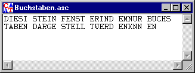

Symbol des Menüs:
In diesem Fenster wird ein Dokument angezeigt, welches nur aus Buchstaben besteht. Dieses Dokument kann auch bearbeitet werden (siehe dazu Menü Bearbeiten). Es können auch andere Zeichen als Buchstaben eingegeben werden (Zahlen, sonstige anzeigbare Sonderzeichen).

Enthält ein Dokument nur Buchstaben und anzeigbare Sonderzeichen, so wird es in einem Fenster für Text Ein-/Ausgaben angezeigt. Die Anzeige eines Dokuments mit nicht-anzeigbaren Sonderzeichen geschieht in einem Fenster für hexadezimale Ein-/Ausgaben.